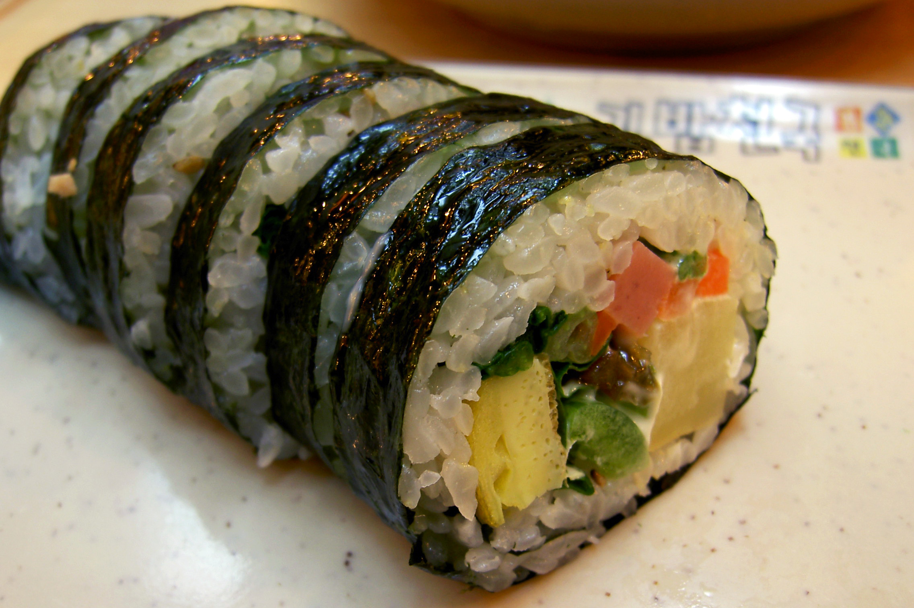

Kimbap

Description
Kimbap (or gimbap, 김밥) is a Korean seaweed rice roll filled with a variety of delicious fillings. Gim (김) is a dried seaweed, and bap is rice.
With various fillings, these rice rolls have an interesting combination of textures and flavors.
Ingredients
- Dried seaweed
- Rice
- Pickled radish
- Bulgogi Beef
- Fish Cake
- Eggs
- Carrots
- Spinach
- Burdock Root
Steps
- Cook the rice slightly drier than normal by using a little less water. Then, lightly season it with sesame oil and salt for a nutty and savory note.
- Use 1.5 cups of raw rice for 4 rolls. If you cook 2 cups of rice, you can make 5 or 6 rolls.
- Lightly season each ingredient as all the ingredients, including the rice, will be seasoned. Picked radish and burdock roots are especially salty.
- Roll it tightly by putting firm, even pressure with your hands all over the roll. Start with a small amount of each filling if this is your first time.
Home